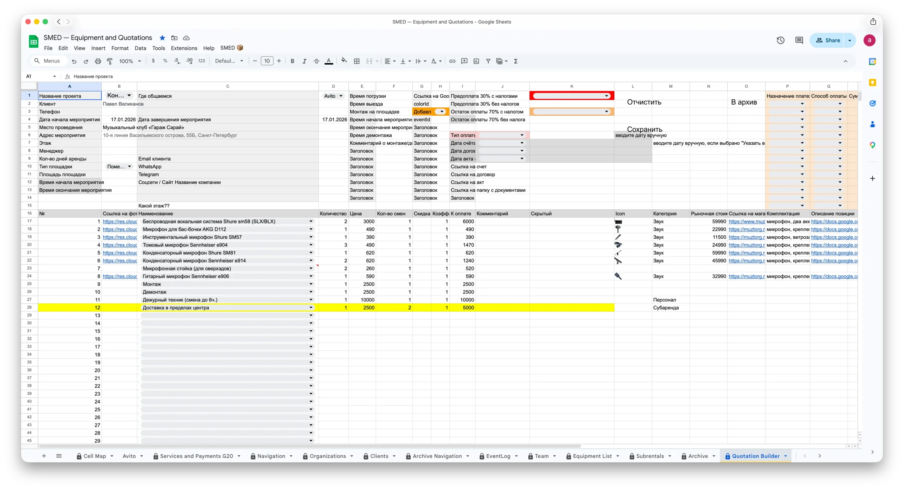
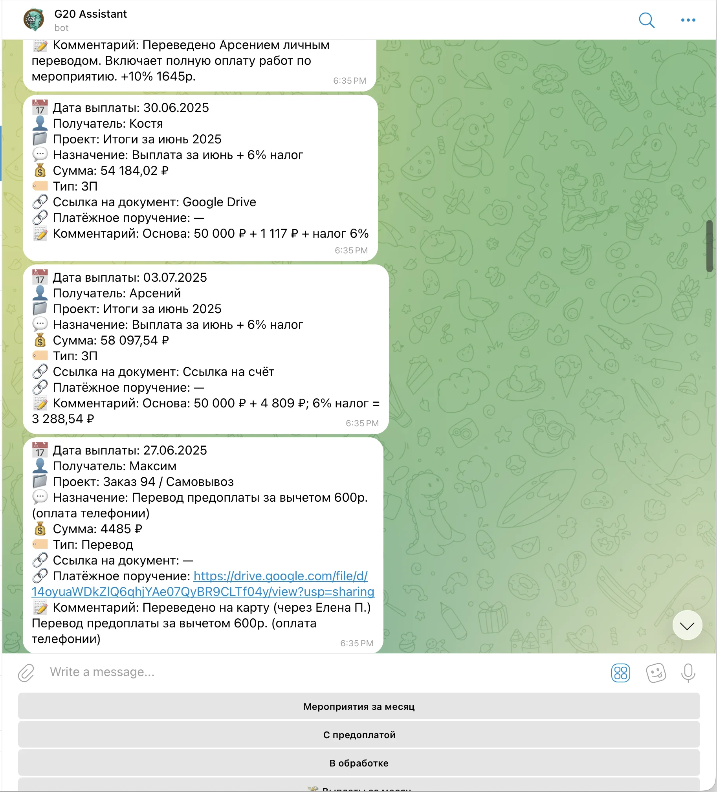
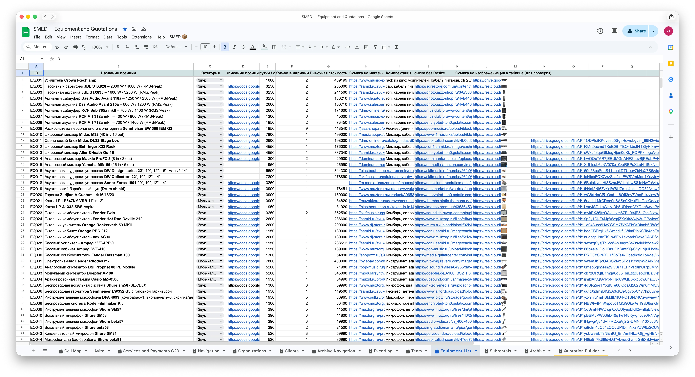
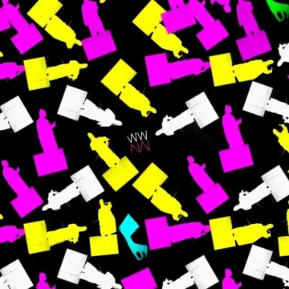
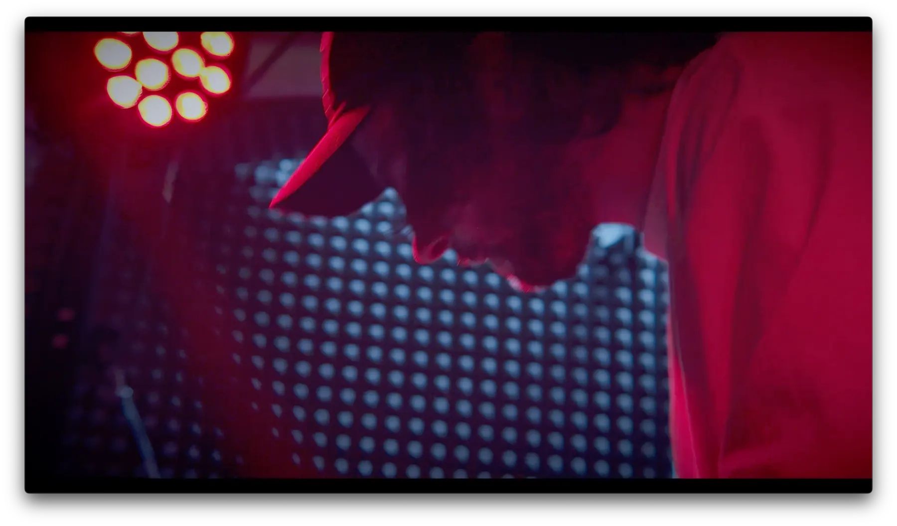
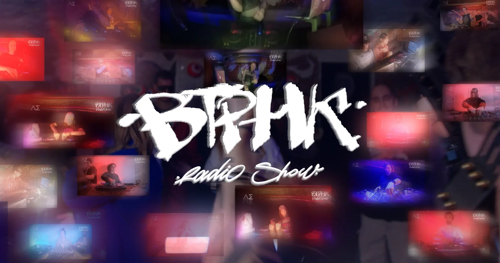
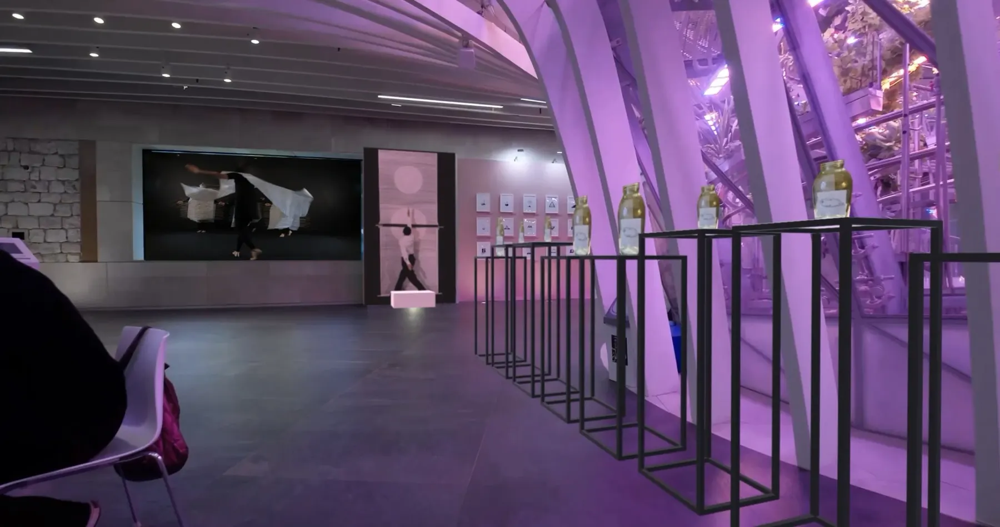
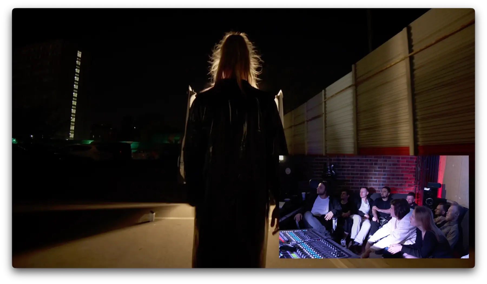
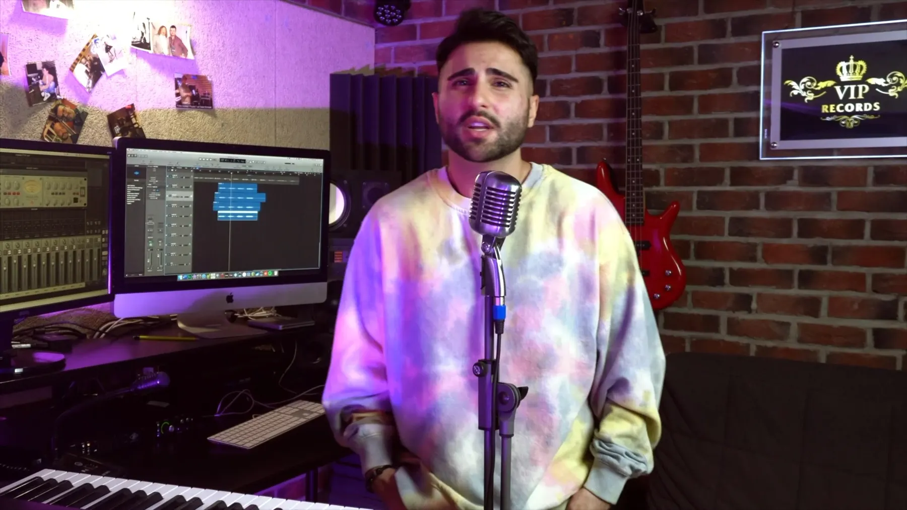

Sales и account
Лиды, брифы, квалификация, работа с ЛПР, КП, переговоры, торг, договоры, ЭДО, закрывающие документы и повторные продажи.
Sales · Account · Event Production
Sales / Account Manager для event, media и technical production
Продаю и сопровождаю услуги, где важны переговоры, смета, подрядчики, техника, документы, площадка и финальное качество. Понимаю производство изнутри, поэтому могу быть одной точкой контакта между клиентом, командой и подрядчиками.
Позиционирование
Лиды, брифы, квалификация, работа с ЛПР, КП, переговоры, торг, договоры, ЭДО, закрывающие документы и повторные продажи.
Площадки, сметы, команда, подрядчики, райдеры, звук, свет, LED, монтаж, запуск, демонтаж и контроль качества на площадке.
Видео, промо, съемки, монтаж, постпродакшн и звук. Этот опыт помогает точно считать сроки, ресурсы и риски creative-проектов.
CRM, Telegram-боты, шаблоны КП, документы, лидогенерация и аналитика как способ ускорить отдел продаж и снизить ошибки.
Results Strip
Опыт на проектах разных форматов: частные события, концерты, техническое обеспечение, съемки и production.
Event / ProductionРабота с небольшими частными проектами и комплексными production-задачами с несколькими подрядчиками.
Sales / AccountГости и аудитории мероприятий: от камерных частных событий до крупных площадок.
EventsSLA, бот, уведомления и единая обработка входящих заявок в sales operations.
G20Шаблоны, CRM и автогенерация документов вместо ручной сборки и копирования данных.
AutomationSales Cycle
Быстро выясняю задачу, бюджет, сроки, площадку, ограничения и критерии успеха. Отделяю реальный запрос от общего интереса.
Собираю решение под бюджет: оборудование, персонал, логистика, программа, подрядчики, резервные варианты и коммерческие условия.
Работаю с возражениями, торгом, ЛПР, договором, счетом, актами, подрядными условиями и изменениями по проекту.
Контролирую производство, закрываю риски, собираю обратную связь, фиксирую результат и ищу следующий повод для продажи.
Case Studies
Фото будут добавлены после утверждения структуры страницы.
Построил процесс от входящей заявки до КП, договора, исполнения, отчетности и пост-продаж. В этом кейсе automation работает как преимущество sales-команды: быстрее ответ, меньше ошибок, понятнее воронка и проще контроль проектов.
Открыть подробности кейса



Этот блок собирает event-направление в одну понятную категорию: бриф клиента, смета, площадка, подрядчики, оборудование, команда, тайминг, монтаж, запуск, демонтаж, закрытие бюджета и обратная связь.
Клиент, площадка, кавер-группа, ведущий, оформление, техника, фото/видео.
Шоу-программа, LED, DJ, кавер-группа, балет, ведущий и подрядчики.
Райдер артиста, звук, свет, LED, подрядчики, монтаж, шоу и демонтаж.
Концепция, студия, модели, костюмы, реквизит, фото/видео и постпродакшн.
Media / Video / Sound
Конкретные проекты листаются горизонтально и открываются кликом по карточке.
Вел проекты от брифа и сметы до съемки, монтажа, правок и сдачи. Понимаю роли оператора, монтажера, режиссера, техника, подрядчика и клиента, поэтому могу точно объяснить стоимость, сроки и риски media-проектов.

workflow@arsenynn Больше video production материалов в Telegram
Идея, музыка, съемка, техника, постпродакшн и 3D-анимация.

Серия промо-роликов, визуальный стиль, логотип и клубная съемка.

Фандрайзинг-ролик, 3D-план, выставка и документальный отчет.

Студия, 10+ участников, онлайн-гости, две камеры, OBS и полный постпродакшн.

Звукорежиссерский опыт помогает продавать technical production через понимание процесса, ресурсов и качества: запись, оборудование, сессии, музыканты, сведение, мастеринг и правки.
Automation As Sales Advantage
Lead-gen инструмент для event-рынка: мониторинг Telegram-каналов, фильтрация шума, дедупликация и передача чистых лидов в таблицу/чат продаж.
Открыть подробности
CRM, КП, документы, SLA и операционные уведомления, которые ускоряют работу менеджера и делают процесс прозрачным для команды.
Открыть подробности
Пример intake-бота: структурирует обращение клиента и передает специалисту не сырой чат, а понятный briefing по делу.
Открыть подробности
Технические детали, стек, скриншоты и инженерные кейсы вынесены отдельно, чтобы не размывать Sales / Account позиционирование этой страницы.
Открыть /it-aiHR Summary
Sales / Account / Event Manager. Фокус: продажи complex production услуг, ведение клиента, event и media production, подрядчики, переговоры, документы, контроль реализации и повторные продажи.
Контакт
Быстрее всего отвечаю в Telegram. Для технических AI/automation деталей есть отдельная страница `/it-ai/`, чтобы HR и заказчик могли смотреть нужное направление без смешивания контекста.